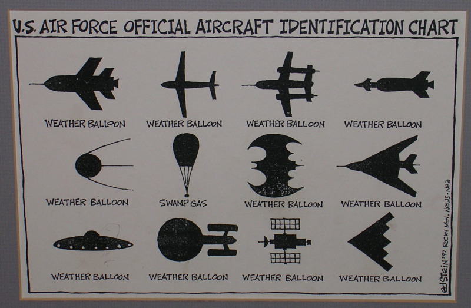

A lack of donations means this web page will be ending soon.
Want to contribute to this web page? Please do. Banking info is
here.
Andromeda Chained to the Rock by the Nereids
* * *

We scream, we swoon. How dumb can we get?


Why gravity is not limited by the speed of light in space that is self-generated from the quantum foam

Indeed many of the mysteries of quantum measurement
are resolved when it is realised that it is the measuring apparatus itself that actively
provokes the collapse, and it does so because the QSD [quantum state diffusion] process is most active when the
system deviates strongly from its dominant mode, namely the ongoing relaxation of the
system to a 3D process-space, and matter survives only because of its topological form.
This is essentially the process that Penrose suggested, namely that the quantum measurement
process is essentially a manifestation of quantum gravity. The demonstration
of the validity of the Penrose argument of course could only come about when quantum
gravity was derived from deeper considerations, and not by some ad hoc argument such
as the quantisation of Einstein's classical spacetime model.
That the non-local QSD terms lead to wavefunctional collapse is relevant to the new
theory of gravity . . . This collapse amounts to an ongoing sharpening of the
homotopic mappings towards a 'classical' 3D configuration -- resulting in essentially the
process we have long recognised as 'space'. Being non-local the collapse process does
not involve any propagation effects, that is the collapse does not require any effect to
propagate through the space. For that reason the self-generation of space is in some sense
action at a distance, and the emergence of such a quantum process underlying reality is,
of course, contrary to the long-held belief by physicists that such action is unacceptable,
though that belief arose before the quantum collapse was experimentally shown to display
action at a distance in the Aspect experiment. Hence we begin to appreciate why the
new theory of gravity does not involve the maximum speed c of propagation through
space. and why it does not predict the GR gravitational waves travelling at speed c, of
the kind long searched for but not detected.
—Reginald T. Cahill, Process Physics: From Information Theory to Quantum Space and Matter
|


Bypass Internet censorship
Read news article and get report here
Get Psiphon program and User guide here
|
Recommended Torrents
Note: Torrents are just information files and are legal everywhere. But actually downloading the file referenced
in a given torrent may or may not be legal in your location. Don't do anything illegal.
Click for information and download link:
* * *
* * *
* * *
The Counterfeiters (movie, German with English subtitles). Actually, John Steinbeck, the author, proposed a plan to Franklin Roosevelt to destabilize Nazi Germany by counterfeiting its currency, but the plan horrified Treasury Secretary Morgenthau. Roosevelt later wrote Steinbeck: 'Killing is all right, and you could attack religion with some impunity, but you were threatening something dearer than life to many people . . .' ('Uncle Sam: Bashful Counterfeiter', Murray Teigh Bloom, International Journal of Intelligence and Counterintelligence, v2, n3, Fall 1988). Central bank money is already fake, a con, but if you counterfeit the fake money--fake the fake money--you risk exposing the illusion.
* * *
* * *
Neuro-Linguistic Programming
* * *
Knowledge protects
* * *
The social construction of reality
40 Social interaction books (torrent will download a file which is in
.uif format. Convert this .uif file to .iso using MagicISO, which is a Windows program (Linux users may find this reference helpful). The trial version of MagicISO is sufficient. Go to Tools-->Decompress UIF Image on the MagicISO menu. Once the file has been converted to .iso, then burn a CD for the .iso image using whatever utility you normally use, or also using the trial version of MagicISO. Then on the CD you will find most of the books are in .pdf format, although some of them are in .chm format, which is a Microsoft compressed .html file. To open .chm files in Linux, install the chm viewer or for better fonts the kchmviewer (then go to Applications-->Accessories-->KchmViewer and choose the file to open) or read this.)
* * *
Teaching the AFC when to go kino
* * *
* * *
Learn Russian (Russian lessons for English speakers in the form of .mp3 files; slow download)
* * *
Note: in Windows you can decompress .rar files with Rarzilla, while in Linux you need to install the unrar command.
* * *
More to Moon probes than meets the eye. A remote viewer's involvement with US intelligence.
* * *
This is educational as well as entertaining. Although there is much more to the story than covered here.
Aside from the issue of Afghan fighters like bin Laden, Bill Casey created a plan to send South American cocaine into Afghanistan to get Russian soldiers addicted. The cocaine shipments through Florida to Afghanistan
became a growth industry, then fairly quickly--because of the profit potential--became increasingly diverted to the American market. (Details were supplied to me by a close associate of Bill Casey.)
|

* * *


|
Connect
to:
Quantum articles
Miscellaneous
Short Stories
Archive #304
Mission Statement
Privacy & Crypto
Digital Finance
Gold Market
Chaos & Fractals
Java Encryption Code
Jack Parsons
Bob--the Sex Candidate
Homepage Links
Spy yourself
Real time anonymous
edits to Wikipedia
World weather
Space weather
World Earthquakes

|